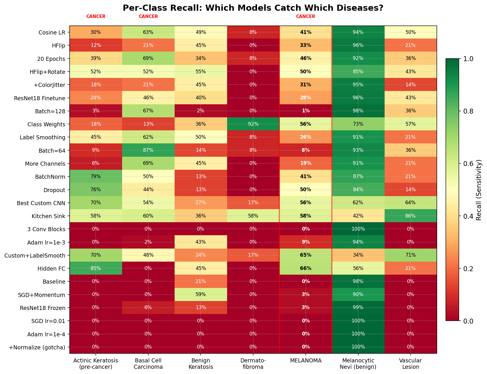
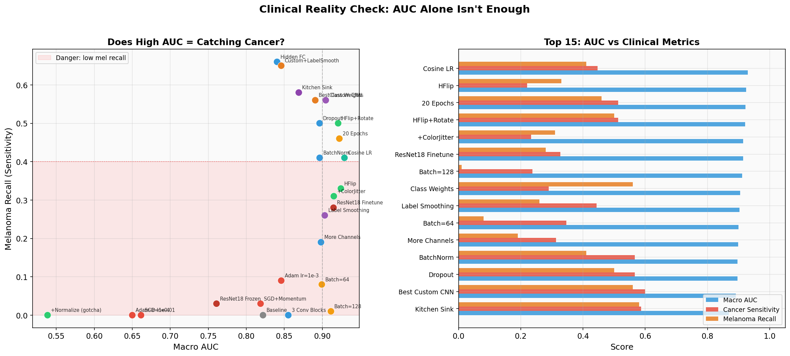
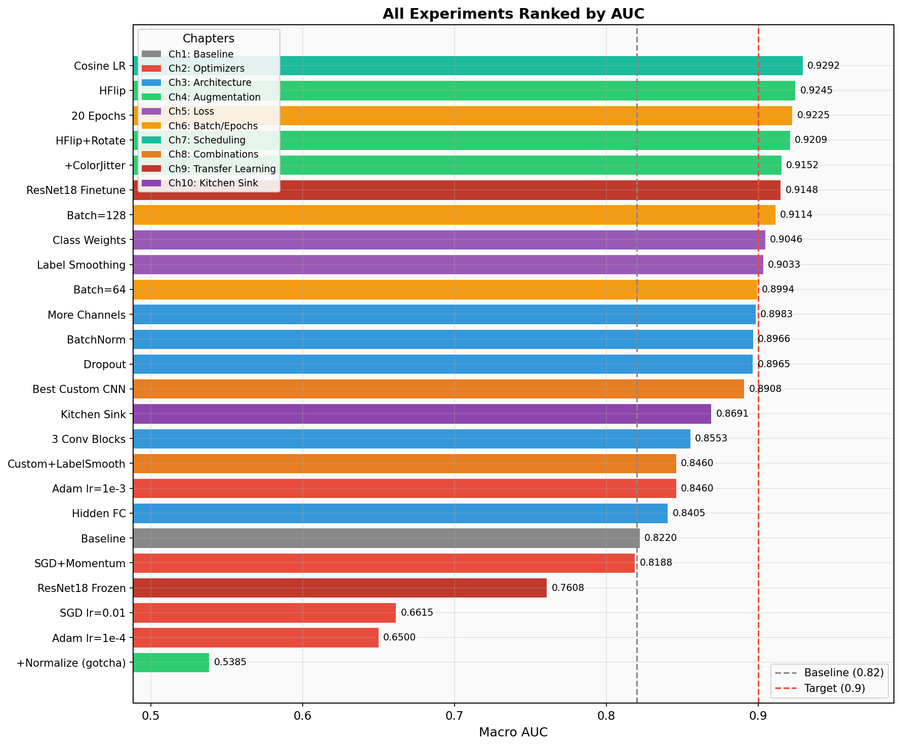
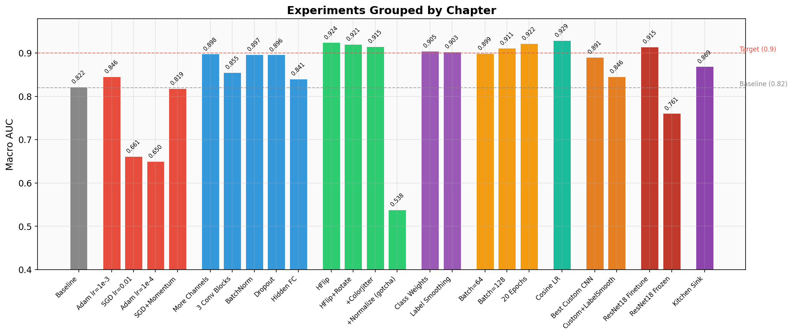
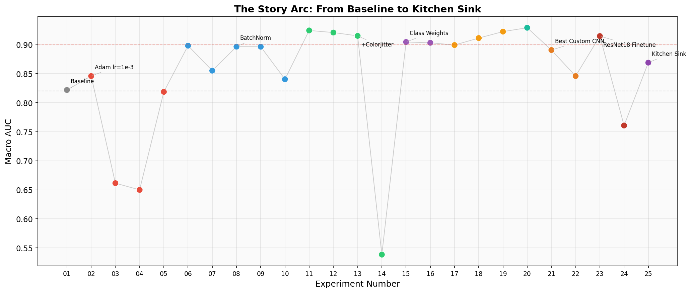
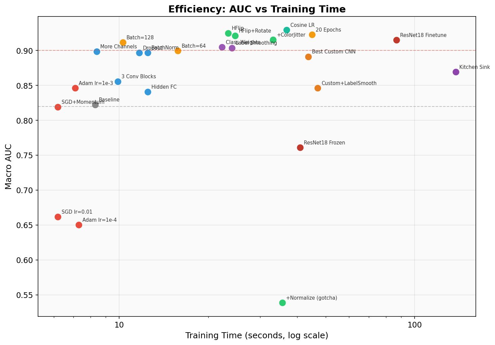
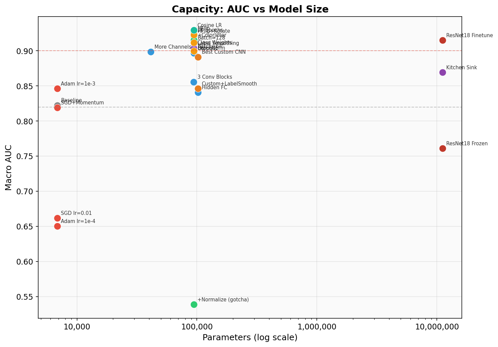

DermaMNIST Skin Lesion Classification — MPHY 6120 Module 6
You just hit 0.93 AUC on a 7-class skin lesion classifier. Congratulations!
But would you deploy this to a dermatology clinic?
Your 0.93 AUC model catches 41% of melanomas.
That means 6 out of 10 melanoma patients walk out the door undiagnosed. AUC is a useful optimization target, but it is not a clinical deployment metric.
Sorted by macro AUC. Watch the melanoma recall column.
| # | Experiment | Chapter | AUC | Mel Recall | Cancer Sens | Accuracy | Params | Time |
|---|
Click any experiment to expand details about what changed and what it teaches.
The intentionally weak starting point. SGD at lr=0.1 is dangerously high — the model overshoots good minima. Only 8 and 16 filters mean the model can barely learn any useful features. With no augmentation, it memorizes the training set's class distribution instead of learning discriminative features. The 0% cancer recall means this model is clinically useless — every cancer patient walks out undiagnosed.
One line changed, AUC jumps +0.024. Adam's adaptive learning rates let each parameter move at its own pace. The model starts learning features beyond just "predict nv." This is the go-to optimizer for almost any deep learning project. Note: melanoma recall is still terrible because the architecture is still too weak to learn fine-grained skin lesion features.
Lowering SGD's learning rate from 0.1 to 0.01 actually made things worse. Why? Without momentum, SGD at 0.01 crawls through the loss landscape in just 5 epochs. It barely learns anything beyond the majority-class shortcut. This shows that learning rate and optimizer choice interact — you can't tune them independently.
Even Adam can underfit if the learning rate is too conservative. At 1e-4 with only 5 epochs, the model barely moves from initialization. This is why lr=1e-4 is typically used for fine-tuning pretrained models (which are already close to a good solution), not for training from scratch. Lesson: match your learning rate to your training budget.
Adding momentum=0.9 gives SGD a "memory" of past gradient directions, letting it build up speed in consistent directions and dampen oscillations. This is how SGD is supposed to be used — vanilla SGD without momentum is almost never the right choice. Result is on par with the baseline but still behind Adam for this small model and short training run.
6x more parameters, AUC jumps from 0.846 to 0.898. More channels = more feature detectors. The model can now learn separate filters for different colors, edges, and textures in skin lesions. Melanoma recall hits 19% — still bad clinically, but the model is starting to notice that melanomas look different from nevi. This is a capacity story: you need enough parameters to represent the decision boundaries between 7 classes.
Deeper, but AUC actually dropped vs. More Channels. Why? Deeper networks are harder to train — without BatchNorm, gradients degrade as they pass through more layers (the "vanishing gradient" problem). The 0% melanoma recall is a red flag: this model collapsed to predicting majority class. Takeaway: depth without BatchNorm can hurt. AdaptiveAvgPool2d is still a good pattern — it replaces hardcoded spatial dimensions with a learnable global pooling.
Same architecture as Exp 07, but with BatchNorm after each conv layer. AUC jumps from 0.855 to 0.897, and melanoma recall explodes from 0% to 41%. BatchNorm normalizes each layer's inputs to zero mean and unit variance, which (a) prevents internal covariate shift, (b) acts as mild regularization, and (c) allows higher learning rates. This is often the single most impactful architectural change you can make. This model becomes our base for the rest of the experiments.
AUC is nearly identical to BatchNorm alone, but melanoma recall jumped from 41% to 50%. Dropout randomly zeros 30% of activations during training, forcing the network to not rely on any single feature. This regularization makes the model more robust to subtle differences — exactly what you need for distinguishing melanoma from benign nevi. The AUC/recall divergence is starting to show: improvements in rare-class detection don't always move the overall metric.
AUC dropped to 0.841, but melanoma recall hit 66% — the highest of any experiment! Adding a hidden FC layer gives the classifier more expressive power to separate classes in feature space. The AUC drop likely comes from worse calibration on majority classes. This is a key clinical tradeoff: this model would catch 2 out of 3 melanomas at the cost of more false positives on common lesions. In a derm clinic with follow-up biopsy capability, that tradeoff might be exactly right.
The simplest possible augmentation yields a massive AUC jump: 0.897 → 0.925. Skin lesions have no inherent left-right orientation, so horizontal flip is always safe. With 10 epochs, the model sees each image ~5 times flipped and ~5 times unflipped, effectively doubling the training data. But notice: melanoma recall actually dropped from 41% to 33%. The extra epochs let the model fit majority classes better, which boosts AUC while relatively neglecting rare classes.
Adding ±15° rotation simulates dermoscopes being held at different angles. AUC is slightly lower than flip-only, but melanoma recall jumped back to 50% and cancer sensitivity hit 51%. The rotation adds enough noise that the model can't just memorize spatial layout — it has to learn rotationally-invariant features, which happen to be more useful for distinguishing cancer from benign lesions.
Color jitter simulates lighting variation in dermoscopy. AUC dipped slightly, and melanoma recall dropped. Why? Color is actually informative for skin lesion classification — melanomas tend to have irregular colors. Too aggressive color jitter can wash out the signal that distinguishes dangerous lesions. Lesson: not all augmentation helps equally. Domain knowledge matters when choosing augmentations.
WORST RESULT IN THE ENTIRE SUITE.
This is an intentional trap. Normalizing with ImageNet statistics shifts pixel values to be centered around zero with unit variance. But the validation transform can't be changed (it's in a locked section), so val data stays in [0,1] range. The model learns features on normalized data and then sees completely different distributions at evaluation time. Preprocessing must be consistent between train and validation. This is one of the most common bugs in real ML pipelines and is extremely hard to debug because the model still trains fine — it only fails silently at evaluation.
Accuracy dropped from ~70% to 62% — but melanoma recall jumped to 56%. The inverse-frequency weights make a melanoma misclassification cost ~6x more than missing a nevi. The model now actively looks for melanoma features instead of defaulting to the safe "it's probably benign" prediction. In clinical terms: we went from catching 0 melanomas to catching more than half. The accuracy drop is from nevi being misclassified more often — more false positives, but those just mean extra biopsies, not missed cancers.
Label smoothing replaces hard targets [0,0,0,0,1,0,0] with soft targets [0.014,...,0.9,...,0.014]. This prevents the model from becoming overconfident and acts as regularization. AUC is comparable to class weights, but melanoma recall is lower (26% vs 56%). Label smoothing helps generalization broadly but doesn't specifically target rare classes the way class weights do. For imbalanced medical data, class weights are usually more impactful.
Doubling batch size from 32 to 64 barely changed AUC but halved the gradient updates per epoch (110 → 55 steps). The smoother gradients favor majority classes. Training is faster (fewer steps), but melanoma recall collapsed from 41% to 8%. In imbalanced datasets, smaller batches create noisier gradients that actually help the model "notice" rare classes.
Surprisingly high AUC (0.911!) but 1% melanoma recall. This is the poster child for why AUC alone is dangerous. With only ~55 batches per epoch and 7007 images, some batches might contain zero melanoma samples. The model optimizes for the majority class and achieves great AUC by being very good at distinguishing the common lesions from each other. A student showing this AUC would look great on the leaderboard while deploying a clinically dangerous model.
More training time helps across the board: AUC 0.923, melanoma recall 46%, cancer sensitivity 51%. The model has more time to learn features for rare classes. But check the training curves — the gap between train and val loss is widening by epoch 20. That's overfitting starting. Going to 50 epochs without regularization would likely hurt. The sweet spot depends on your architecture and regularization strategy.
The leaderboard champion. CosineAnnealingLR smoothly decays the learning rate from 1e-3 to ~0 over 15 epochs following a cosine curve. Early epochs make big moves; late epochs do precision fine-tuning. The result: best-in-suite AUC at 0.929. But melanoma recall is only 41%. This model excels at the overall classification task but doesn't specifically prioritize cancer. This is the model students would be proudest of — and the one that would hurt patients if deployed without additional safeguards.
Everything we learned combined into one model. AUC is "only" 0.891 (rank ~14 out of 25), but cancer sensitivity hits 60% and melanoma recall is 56%. The class weights pull the model toward detecting rare cancers, the augmentation improves generalization, and the cosine scheduler fine-tunes into a good minimum. This is the model a dermatologist would actually want as a screening aid: it catches more than half of all cancers while maintaining reasonable specificity.
Adding label smoothing on top of class weights pushed melanoma recall to 65% and cancer sensitivity to 61% — but AUC dropped to 0.846. The soft targets from label smoothing compound with class weights to create very strong pressure toward rare-class detection, at the cost of majority-class calibration. This is diminishing returns: each added technique provides less marginal benefit and can start interfering with others. The art of ML is knowing when to stop stacking.
11 million parameters pretrained on 1.2 million natural images. The conv layers already know edges, textures, colors, and shapes — they just need to adapt to dermoscopy. AUC of 0.915 is strong, but melanoma recall is only 28%. Without class weights, the massive model capacity is spent on majority classes. Transfer learning is powerful but not magic — you still need to handle imbalance. Also note: 87s training time vs ~12s for the custom CNN. The ImageNet features help on average but don't specifically target the clinical question.
A common shortcut: freeze the pretrained backbone and only train the classification head. This failed badly (0.761, worse than baseline). Why? ImageNet features are learned from natural images (dogs, cars, buildings). Dermoscopy images are tiny (28×28), with very different visual statistics. The frozen features don't transfer well to this domain. Lesson: feature extraction without fine-tuning only works when domains are similar. Medical imaging almost always requires fine-tuning.
The "final boss" experiment. We adapted ResNet18 for 28×28 images by replacing the aggressive 7×7 stride-2 first conv with a 3×3 stride-1 conv (preserving spatial resolution) and removing the maxpool. Combined with class weights, aggressive augmentation, and label smoothing, this model prioritizes cancer detection over leaderboard rank. AUC of 0.869 wouldn't win any competitions, but 58% melanoma recall and 59% cancer sensitivity represent the best balance we achieved between overall performance and clinical utility.
A dermatology practice needs a screening aid that catches cancer (high sensitivity), while keeping false positives manageable (patients sent for unnecessary biopsies). Missing a melanoma is catastrophic; an extra biopsy is inconvenient. The cost asymmetry is extreme.
Why this one?
In a real deployment, this model would flag suspicious lesions for dermatologist review. The 40% of missed melanomas motivates the next step: ensembling or multi-stage screening.
In real clinical AI, the answer is rarely a single model. A mixture-of-experts approach could combine the high-AUC Cosine LR model (good at overall classification) with the class-weighted Best Custom CNN (good at catching cancer). If either model flags a lesion as suspicious, send it for biopsy. This "OR" ensemble would have much higher sensitivity than any single model, at the cost of more false positives — a tradeoff most dermatologists would happily accept.
The Stanford CNN that matched 21 dermatologists used exactly this kind of approach: an ensemble of models optimized for different metrics, combined with clinical decision rules. The single-model results you see here are just the starting point.
The model that wins the leaderboard (0.93 AUC)
is not the model you'd
deploy to a clinic.
Cosine LR catches 41% of melanomas. The Best Custom CNN with class weights catches 56%. In the real world, the metric you optimize is not always the metric that matters. Always look at per-class metrics for safety-critical applications.






